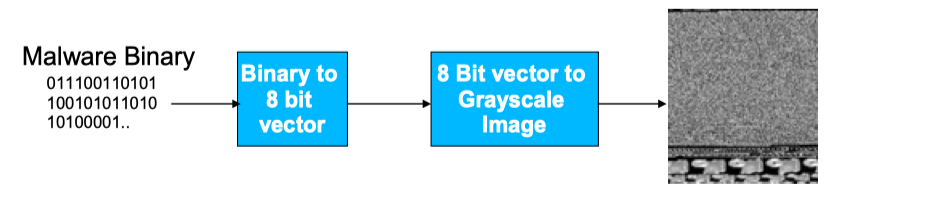
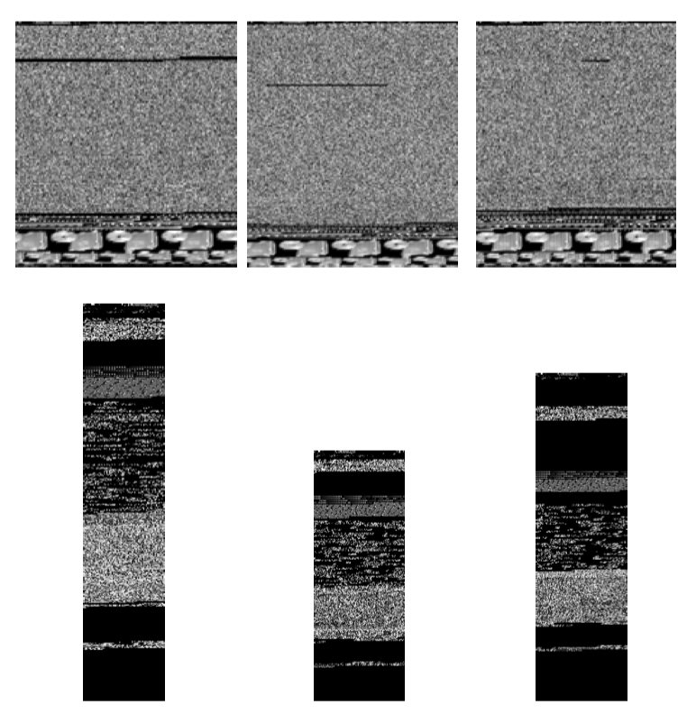
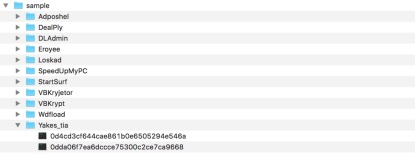
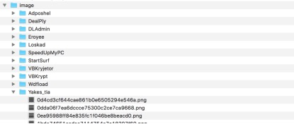
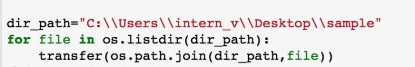
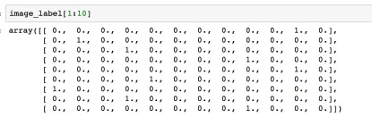
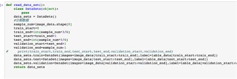
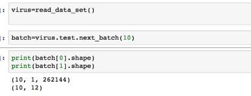
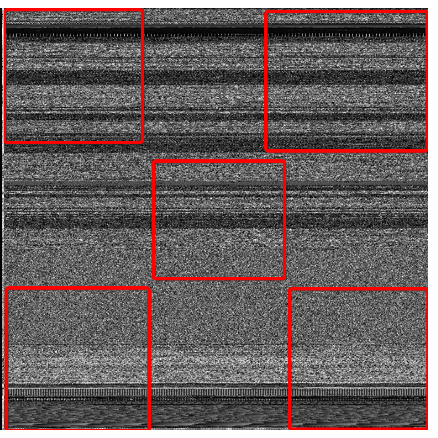

Research summary
19 May 2019 - will Xu | 许士亭
malicious software classification model based on CNN
BackGround
This project had been done during my intership as an virus analyst in a Information Security Company in China in the summer of 2017 I was just got my master degree. This project means a lot to me. Not only because it was my first intership and it realted to my major ,Infromation security, and my interst ,machine learning, but also it was my first time to solve a practical problem by myself with deep learning model.
In this artical, I will talk about the work I had done in the sequence of time ,from the first possible solution came to my mind to why I choose the CNN to solve this issue.
The problem is that virus analysts in this company needs to handle a plenty of malicious softwares . They are required to decide the class of a specific malicious software in order to decide the way they should take to kill this virus. In that time, the way they adopted was to compare the software with their database which recorded features of tremendous amount of malicious softwares or compare the MD5 directly. This method needed a lot of human works and had lots of drawbacks.
First,Malicious softwares always belied themselves by changing runing logic, adding redundant code, changing function name or changing the malicious behavior but using same hack method as before. There are thousands of ways to formulate a new malicious software by slight adjusting an original one which means the company needs to add features of those new viruses to their database and also means their classifcation engine could not handle the variety feature of malicious software.
Second, extracting features of malicious software by human sometimes can be incorrect. Human beings always make mistakes especially in this tedious work , even facing lots of assembly code . Another situation is that some features which can be useful to classify one malicious family always not efficient to another one. Therefore, analysts and researchers taking resposiblity of the engine need to exploring the best set of features they should extract and gather from malicious softwares. It costs lots of time and would be a tedious work.
So, they hired me want to solve this problem. Well, I have to admit they just want to explore possibility machine learning methods and may not count on me. However, my collegus in the company gave me lots of helps . My leader had done some reserches before I attended. He wanted to solve this probelm using the n-gram algorithm which has been widely used in language model in NLP area at that time.
n-gram
N-gram was widely used in NLP or Speech Recognition tasks due to its efficient and robust. For example, we always use 2-gram or 3-gram in langauge model. By inputting two words , a language model can output a word which has highest possibility behind these two words. A case in point is that, if we input I ride into the model, it possiblely output bike. It decided by the material the laguage model trained on. So basically, N-gram is to calculate appearence possiblity of all n words in its training set statistically. It needs a huge corpus and still could not cover all combination of words appearing in real world. Nevertheless, there are plenty ways of smoothing to deal with this problem, such as Good Turning and Simple Linear Interpolation.
Robert Moskovitch in his paper Unknown Malcode Detection Using OPCODE Representation presented methodology for the detection of unknown malicious code, based on text categorization concepts.They extracted sequences of OpCode expressions, which they term OpCode-n-grams. The vocabularies extracted were of 515, 39,011, 443,730, 1,769,641, 5,033,722 and 11,948,491, for 1-gram, 2-gram, 3gram, 4-gram, 5-gram and 6-gram, respectively. Later TF and TFIDF representations were calculated for each n-gram in each file. After that, they experiment some machine learning methods on those features.
D Krishna Sandeep Reddy · Arun K Pujari in his paper N-gram analysis for computer virus detection described a new feature selection measure, class-wise document frequency of byte n-grams. Then, they combine the classifiers,such as SVM and decision tree, to improve the performance of classification.
There are many papers showing that n-gram can be used to extract features from softwares’ source code. They all acheived good accuracy in many tasks. However, I still don’t want to use this method. First, it needs many viruses and the company would not give me so much malicious software at experimental period. Second, I prefer an end-to-end solution. N-gram only provides us a convinent way to construct features. But it is not convinent enough because you still need to attempt different machine learning algorithems after that.In other words, it is not graceful.
Treat SoftWares as Images!
When I first time saw this concept, I was very excited! It is a novel method and that means we can visualize viruses. But after I searched some papers( actually, only one paper is important) using this concept, I started to be disappointed. Because in those paper , they used complex computer vision algorithems to extract features from images formed from malwares and then tried them with different machine learning algorithem. One abstacle for me was I did not familiar with those algorithems and that would cost me lot of time if I tried to acquire related knowledge. Another question was they are still not end-to-end solutions.
An Important Paper
L. Nataraj, S. Karthikeyan in Malware Images: Visualization and Automatic Classification proposed a simple yet effective method for visualizing and classifying malware using image processing techniques.
-
VISUALIZATION
In this paper,a given malware binary is read as a vector of 8 bit unsigned integers and then organized into a 2D array. This can be visualized as a gray scale image in the range [0,255] (0: black, 255: white). The width of the image is fixed and the height is allowed to vary depending on the file size.
 Fig 1. Visualizing Malware as an Image After visualization,They found that different sections (binary fragments) of the malware exhibit distinctive image textures. And they also found that images of different malware samples from a given family appear visually similar and distinct from those belonging to a different family like Fig 2 showed.
 Fig 2. Two Families -
Feature Vector and Classifier
After authors saw the fig 2, they realized that they could use texture classification which is concerned identifying various uniformly textured regions in images.To compute texture features, they used GIST which uses a wavelet decomposition of an image. Then they used k-nearest neighbors with Euclidean distance for classification. They do a 10 fold cross validation, where under each test, a random subset of a class is used for training and testing.
-
My Decision and Problems
After I saw the visualization of malwares, I started to find a efficient way to do the images classification. And I resorted to CNN which had been widely used in computation vision at 2017. However, in the paper above stated, it said the width of images is fixed and the height can be varied. That could be a problem for CNN because it requires fixed input dimensions. My strategy is to scale those images into a fixed width and height.
In the paper, it recommended some width of image according to the file’s size. However, in my experiment, I found it was not a matter which width you scaled the image into when we used CNN as long as it keeps essential information. And because the larger images, the larger amout of params in the model and the more time costed, we need to trade off between the information keeped and time consumed when we decide the size of picture. And I found 32*32 images is a good choice.
Summaries
This chapter I will show some summaries I written during the work.
Summary 01
After reading plenty of papers about virus classification , we have decided to try to classify malware family with a visualization approach based on Deep Learning technic. L. Nataraj in his paper Malware Images: Visualization and Automatic Classification proposed a novel method for visualizing and classifying malware using image processing techniques and got a 98% classification accuracy on a malware database of 9,458 samples with 25 different malware families. They transform the malware classification problem into an image classification issue. Consider the technics they used in their approach is obsolete and the Deep-Learning method is widely used in image procession area, so we want to use Deep-Leaning to classify malware family instead of extracting the GIST features of image and we want to do some experiments to test our thought.
Before building our Deep-leaning model, we need to construct a robust Input Pipeline. This pipeline not only be used in training our model but also will be used when we classify malware with our constructed Deep-leaning model. For our situation, the Input Pipeline have two main sub-steps ,1) convert a software into an image 2)label the image to build a dataset. In this week I have finished the python code of this two steps.
-
step1: Data Processing: Convert files into Images
 Fig 5. raw files and File directory structure  Fig 6. image files and File directory structure  Fig 7. Our code Our code need input a parameter dir_path, in this case it is “C:\\Users\\intern_v\\Desktop\\sample” . The program will go through all the sub folders under the dir_path, and create folders having same name under Image folder. The Image folder is in a level as same as Sample folder and it will be created in the beginning when our program is running. For each files in the sub-folder the program will convert it into an image which size is 512*512. Every .png files produced have the same name of the raw file.
-
Step2: Data processing: Database Constructing
 Fig 8. image label As we have 11 kinds of malwares, we need to build a 11-dimensions vector to represent the label of every malware. ( This technic named one-hot)
 Fig 9. code split data We split the Dataset into 3 parts : training data, test data and validation data. The proportion of three parts is 3:2:1.

Fig 10. code Our dataset support next_batch operation, and we can get a fix number of samples ( image+lable) with this operation.
 Fig 11. code We use pickle package in python to save this dataset to our disk,.
Summary 02
In this week, I have tried plenty of machine learning methods(eg. KNN, Random Forest, GaussianNB and Deep-Learning ) on our Dataset . The classification accuracy of every algorithm is showed in Table 1 and Fig 12, Fig 13 and Fig4.
| Algorithm | Accuracy on test data | Accuracy on training data | picture size |
|---|---|---|---|
| KNN(k=5) | 53% | 50% | 512*512 |
| GaussianNB | 78% | 78% | 512*512 |
| RandomForest（60 trees GINI） | 83% | 94% | 512*512 |
| ExtraTreesClassifier（60-trees GINI ） | 83% | 95% | 512*512 |
| KNN(k=5) | 57% | 58% | 256*256 |
| GaussianNB | 79.8% | 76.7% | 256*256 |
| RandomForest （60 trees GINI） | 80% | 81% | 256*256 |
| ExtraTreesClassifier（60-trees GINI ） | 81.5% | 82.5% | 256*256 |
| KNN(k=5) | 72% | 73% | 128*128 |
| GaussianNB | 75% | 80% | 128*128 |
| RandomForest （60 trees GINI） | 78% | 80% | 128*128 |
| ExtraTreesClassifier（60-trees GINI ） | 78% | 80% | 128*128 |
| KNN(k=5) | 82% | 85% | 28*28 |
| GaussianNB | 74% | 80% | 28*28 |
| RandomForest （60 trees GINI） | 80% | 81% | 28*28 |
| ExtraTreesClassifier（60-trees GINI ） | 81% | 81% | 28*28 |
| CNN | 85% | 84% | 28*28 |
We achieve the highest accuracy on test dataset 85% with CNN ( Convolutional Neural Network). CNN is a widely used model in Deep-learning. The accuracy on training dataset is 84% with CNN. The CNN model is not over fitting like random forest and it can only be adopted when our picture is small due to the huge number of parameters which used to represent the weight and bias in the CNN model. But we still got an 85% accuracy rate with 28*28 picture size.
Summary 03
This week I try to improve the performance of our CNN model. I have done this in three aspects: 1) add convolutional layer between concolutional layer and maxpool layer,2) add L2 loss of weights and 3) take a method of Data Augmentation. The first two has a little improvement on the accuracy and the last one raised the accuracy up from 85% to 90%.
-
Data Augmentation Deep learning always has good classification ability with huge data set. Consider I only have 1000 malwares, I decided to create more data with those malwares. Our CNN model needs a 3232 size picture as its input, so I transform those malwares into 3232 pictures and those pictures alone have been used in our experiments before I take the Data Augmentation approach. But when came to the Data Augmentation, the size of our data set increases 60 times. In data augmentation, we transform our malwares into size pictures . Then for each size picture I cut into five 32*32 size images. The way I cut the picture is showed in the figure below.
 Fig 15. Data Augmentation (Cutting one image into 5 32*32 size images, from top left, right top, left bottom, right bottom and the middle of the image) After this process, our dataset has 60,000 samples and we got a accuracy above 90%. I think we can achieve a higher accuracy rate after do more training steps on this huge dataset.
Implementation
To convient analysts to use this model, I also construct a cs programe.
The code and instruction can be found here!